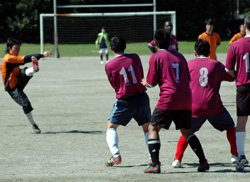
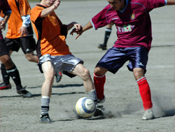

|
Oi Futo 1, Mon 9th Oct. Going by the previous day’s whether it could be expected that both teams may have been relishing a game on a nicely moist Oifuto pitch. Instead however we ended up with a perfectly pleasant day, with the now familiar solid stony Oifuto pitch under an emerging sun.

Maritizio went into this game with a “must win” scenario to continue any hopes of promotion next season. The game started in typical fashion with both teams settling down early on, but with STONEDS having most of the action. A particular pattern was clearly emerging with Maritizio relying on the long ball stance, while STONEDS opting to play their familiar short pass build up.
Towards the end of the first half the deadlock was broken. A free kick was awarded 50 yards out from the Maritizio goal. While it could be argued that kick lacked power and direction, the Maritizio goalkeeper failed to hold on to the ball, and paid the price with STONEDS being able to pounce on the rebound.
The second half started with needless to say, more impetus from both teams to take grasp of the game. 15 minutes later it looked like Maritizio won this initiative, by being awarded a penalty. The usually reliable Maritizio penalty taker Vernon Gill stepped up and lazily pushed the ball to the outside of the post.
15 minutes later almost exactly the same situation fell to STONEDS with exactly the same result. Gaps began to open in both defense but it was then STONEDS who were to go further ahead with some quick passes which resulted in yet another goal created from a rebound. With 4 minutes left to play, STONEDS then sealed the game following a Maritizio midfield mistake, which left the ball fortuitously in the path of a STONEDS player facing the goal who calmly placed the ball in the right hand corner with a low drive.
Verdict: STONEDS remain on course for their title chase while Maritizio need win all games going forward and hope for the best.
Report by Vernon Gil
|